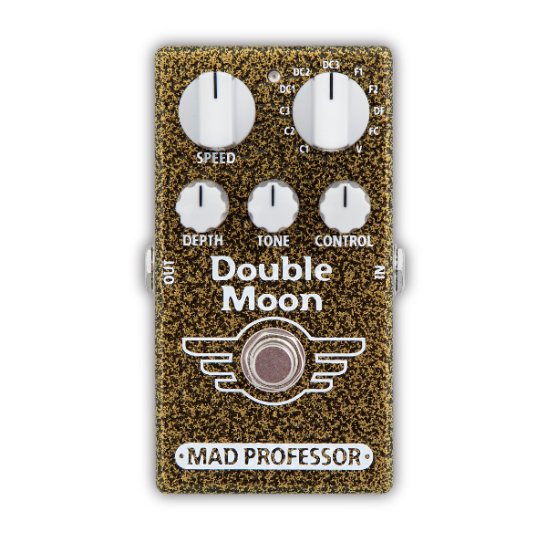

<div class="textcontainer">
<h3>About Me</h3>
<p class="margin"> </p>
<div class="center-row">
<p id="aboutme">
My name is Mark. I am a rigorous student at SSP at Harvard. For SSP I stay at Mower and the heat is killing me :(
</p>
</div>
<br></br>
My fields of interest include most of the STEM subjects, especially physic. I want to devote my life to innovations. Starting back in my childhood I had a strong interest in spaceships and cosmos itself. I believe that the PHYS-S12 course will help me gather knowledge needed to proceed my dream career as an aerospace engineer!
<br></br>
My hobbies include playing guitar, so for the course I am aimed to create a modulation pedal similar to these ones:
<br></br>

<br></br>
Hopefully I will upload a video of myself using it later on down below
<br></br>
<video width="640" height="480" controls>
<source src="temp-video.mp4" type="video/mp4">
</video>
</div>